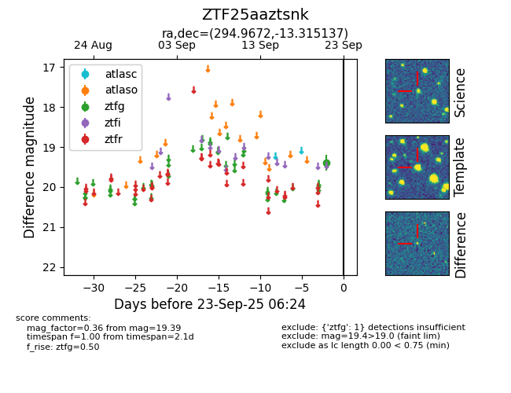

FINK: ZTF25aaztsnk
Lasair: ZTF25aaztsnk
ALeRCE: ZTF25aaztsnk
ZTF25aaztsnk (ztf,fink)
equatorial (ra, dec) = (294.9672,-13.31514)
galactic (l, b) = (26.2244,-16.65890)

last ztfg=19.39
1 ztfg detections